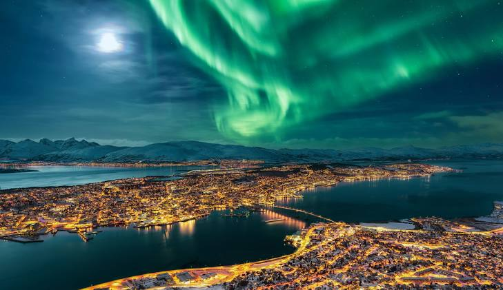
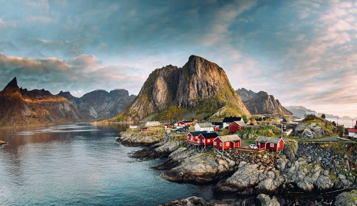
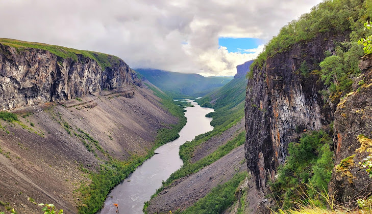
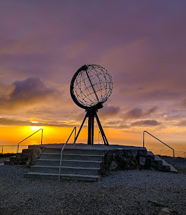
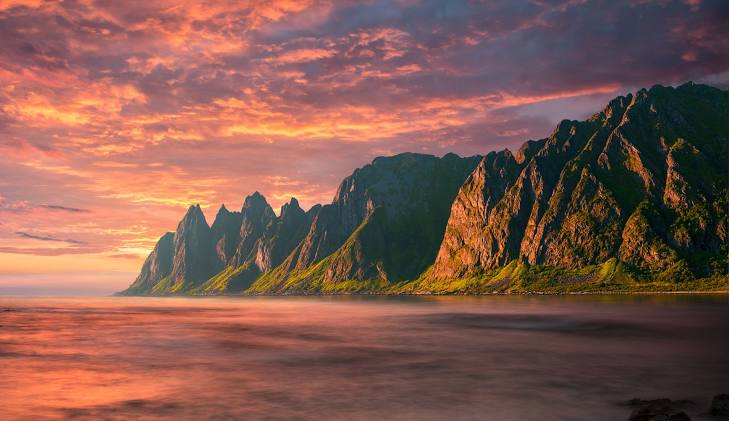
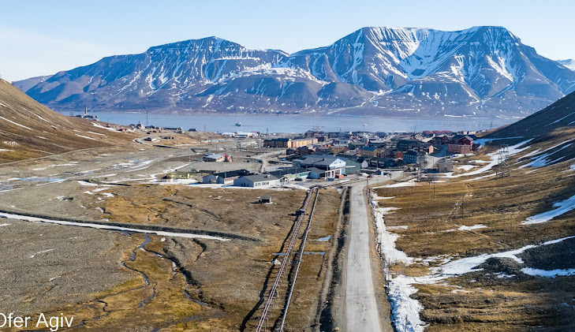

Known as the gateway to the Arctic, famous for Northern Lights, Arctic Cathedral, and midnight sun.

Famous for dramatic peaks, fishing villages, and stunning fjords—ideal for photography and hiking.

Home to ancient rock carvings (UNESCO), ice hotels, and great winter activities like dogsledding.

The northernmost point of Europe offering breathtaking cliffs, Arctic Ocean views, and midnight sun.

Norway’s second-largest island, known for rugged mountains, fjords, and scenic coastal roads.

An Arctic archipelago with polar bears, glaciers, and endless wilderness—adventure tourism at its best.